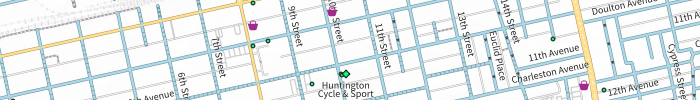
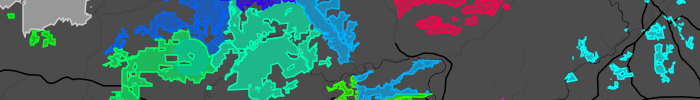
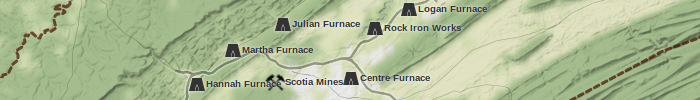

Academic Research
“Updating the Colonial Cartographic Representation of Barbados: Digital Inquiries of a Sugar Island.”➚February 21, 2017
This is my Dissertation conducted at The Pennsylvania State University.
More information is available at the link above.
Map of Indentured Servants from England to Barbados, 16–1700s➚October 16, 2015
This map is part of my PhD research, and also relates to my Masters work (below). The map displays points of the towns from which the servants were brought, and lines to the ports through which they traveled.
The Modern Utility of Ford's Colonial Map of Barbados, 1674➚May 18, 2015
This is my first published paper, branching off of my Masters work.
More information is available at the link above, however, downloads may be restricted
“Digital Visualization of Colonial Cartography: Patterns of Wealth in the Sugar Colony of Barbados.”➚July 6, 2014
This is my Masters Thesis conducted at The Pennsylvania State University.
More information is available at the link above.
“Spatial Analysis of Ancient Maya Settlement near Karst Sinkholes at Xuenkal, Yucatán, Mexico.”April 6, 2013
This is my Undergraduate Honors Thesis, conducted at Kent State University.
More information, citations, and downloads are available at http://rave.ohiolink.edu➚.
Personal Projects
Map of Bike Rides➚Continuously Updated

I collect GPS tracks when I ride my bike. This map displays them all. You can view different visualizations of the data in the layer menu, such as date of ride, bike ridden, or density.
Bike Map for Huntington, WV➚Work in Progress, August 2019
This project is to create a map of Huntington, WV, designed to show bike riders the conditions of the roads and paths. Contrary to many bike maps, this does not classify roads in an arbitrary scale of safety, but rather shows objective information such as speed limits, road surface, and existence of shoulders and bike lanes. Useful Points of Interest show up at higher zoom levels. Map data is derived from OpenStreetMap data, processed in QGIS.
Map of Pennsylvania State Forests➚February 2016
This map takes data from OpenStreetMap (added or modified in part by myself), converted into GeoJSON files, and displays outlines of all State Forest lands in Pennsylvania, as well as Allegheny National Forest, which lies mostly in PA. These regions allow dispersed camping.
Centre County Furnaces Map➚July 2015
I worked with the Centre County Historical Society to create an interactive online map of Centre County's iron industry history. This map shows locations of old furnaces with information about the surrounding sites.